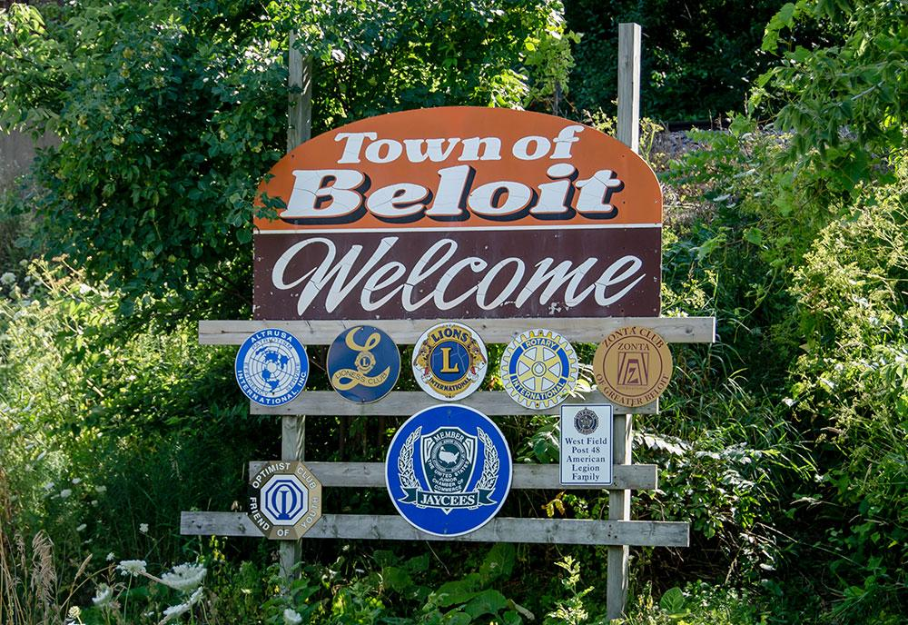

Moving to Beloit, WI: Your New Home Awaits
Welcome to Beloit, Wisconsin! Nestled in the southern part of the state, just north of the Illinois border, Beloit is a city rich in history, culture, and community spirit. Whether you're moving for work, family, or simply looking for a new place to call home, Beloit offers a unique blend of small-town charm and modern amenities.
Why Chose Beloit?
Beloit is more than just a place to live; it’s a community where people come together to create a vibrant and supportive environment. With a population of around 36,000, Beloit is large enough to offer a variety of services and opportunities, yet small enough to maintain a close-knit community feel.
- Affordable Living. One of the most appealing aspects of Beloit is its affordability. Compared to larger cities in Wisconsin and the broader Midwest, Beloit offers lower housing costs, making it an ideal place for families, retirees, and young professionals alike. Whether you're looking to buy a charming historic home or rent a modern apartment, Beloit has options to suit every budget.
- Thriving Job Market. Beloit boasts a diverse economy with opportunities in manufacturing, healthcare, education, and more. The city is home to a number of large employers, including the internationally recognized Beloit College, which draws talent from around the country. Additionally, Beloit’s proximity to major metropolitan areas like Madison, Milwaukee, and Chicago provides even more employment opportunities within commuting distance.
- Education Hub. Education is a cornerstone of life in Beloit. The city is home to Beloit College, a prestigious liberal arts institution known for its innovative programs and beautiful campus. The local school district offers a range of educational opportunities for children, with a focus on academic excellence and community involvement. For families, this makes Beloit an attractive option for raising and educating children in a supportive environment.
Exploring the Neighborhoods
Beloit is a city of distinct neighborhoods, each with its own character and charm. Whether you’re drawn to the historic homes near the downtown area, the peaceful residential streets of the west side, or the new developments on the city’s outskirts, you’ll find a neighborhood that fits your lifestyle.
Interested in Moving?
Moving to Beloit is a decision you won’t regret. With its affordable living, thriving job market, excellent schools, and rich cultural life, Beloit offers everything you need to start your next chapter. We look forward to welcoming you to our community and helping you settle into your new home. Complete the form below to receive some information!